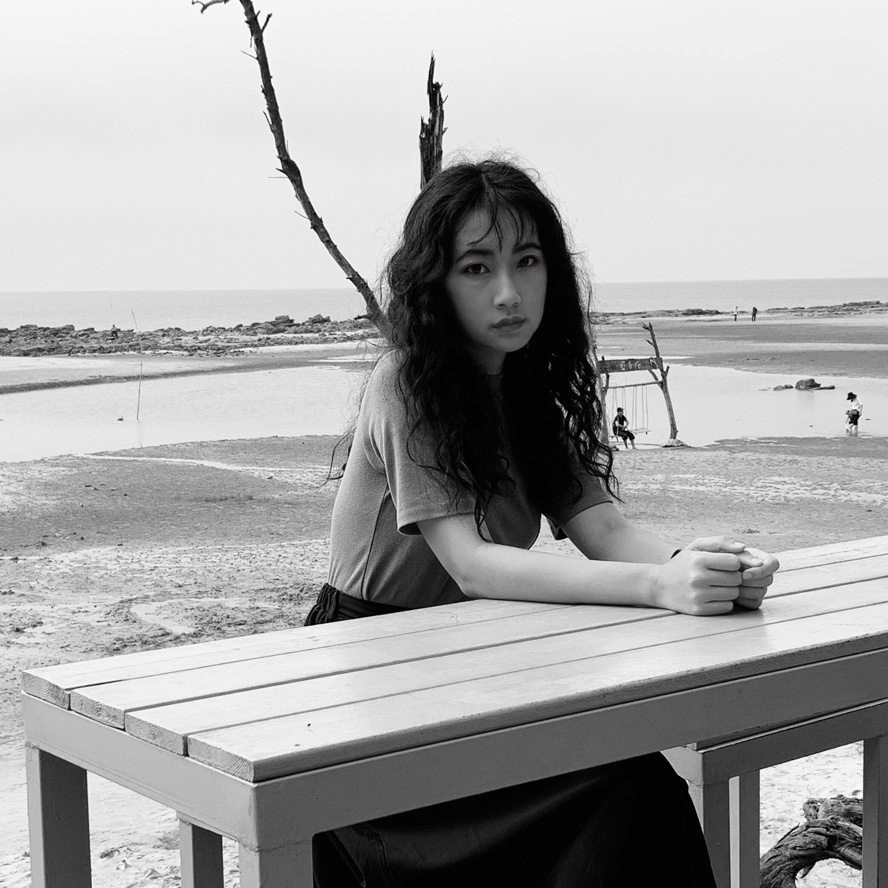

Jiamin Zhao is a Chinese filmmaker based in Chicago. Her work, across fiction and documentary, explores themes of social alienation, cultural memory, and the reproduction of desires in the complex relationships between interior experiences and the external world. She graduated from Columbia College Chicago with an MFA degree in Cinema Directing and is a recipient of the Albert P. Weisman Award for her thesis, "Conversation Among the Ruins."
